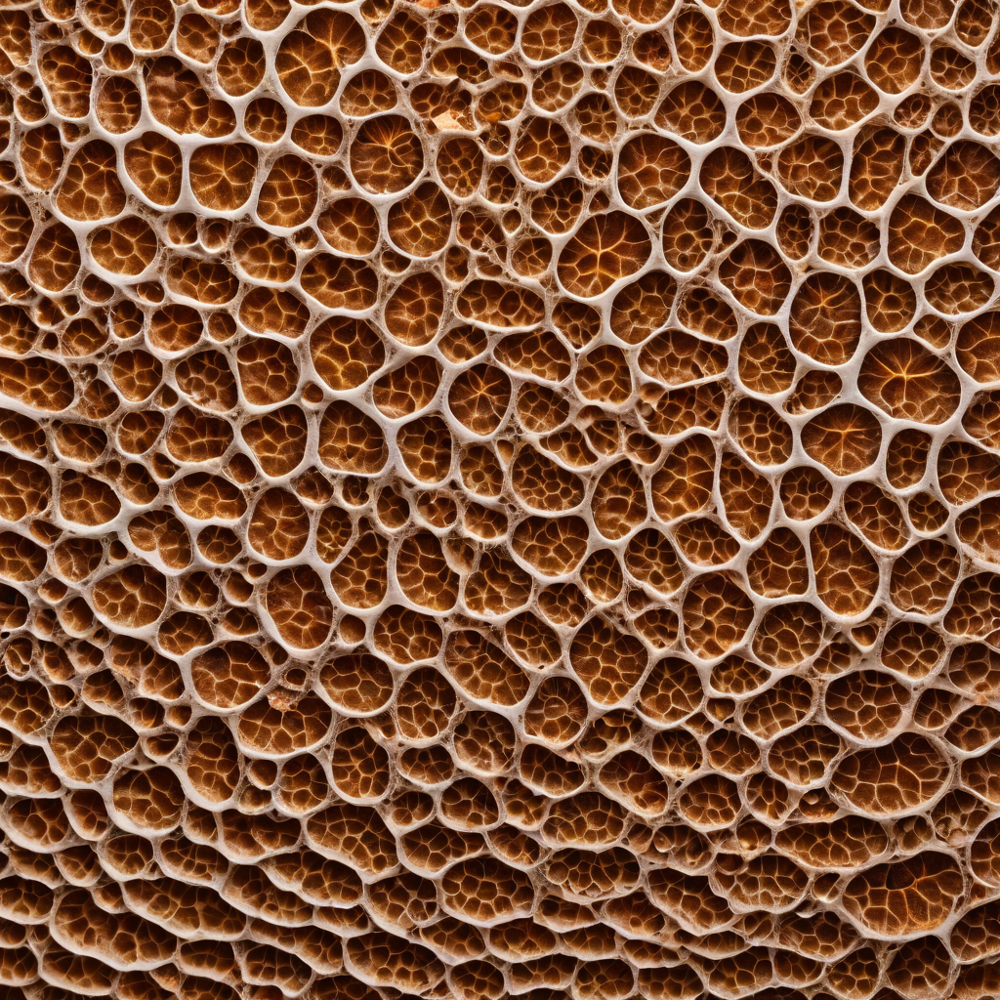
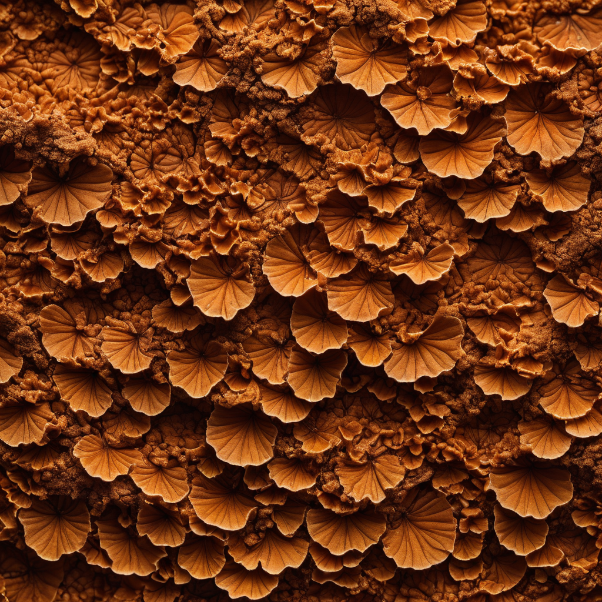
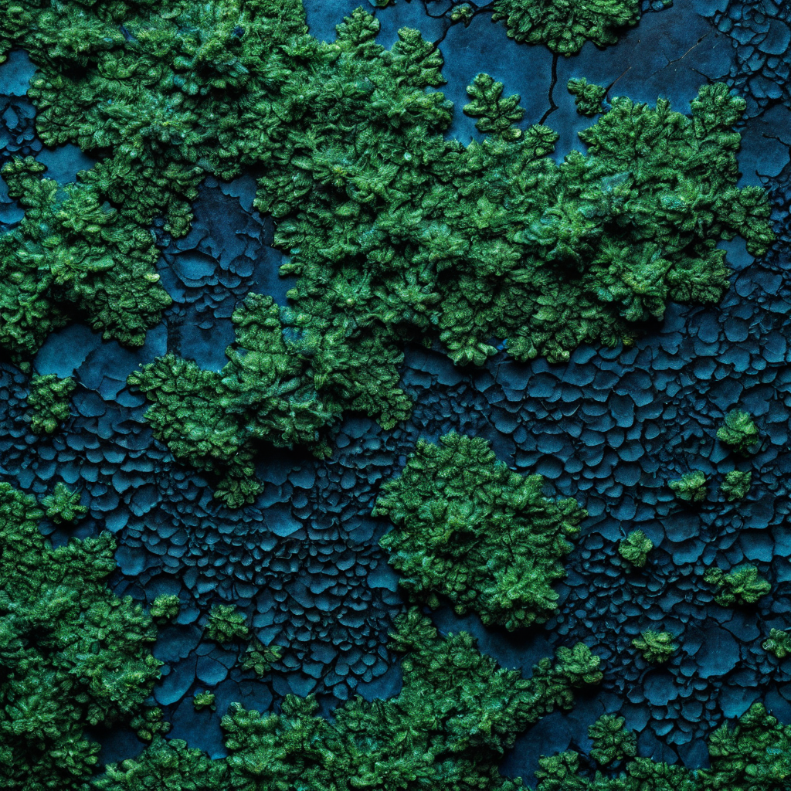
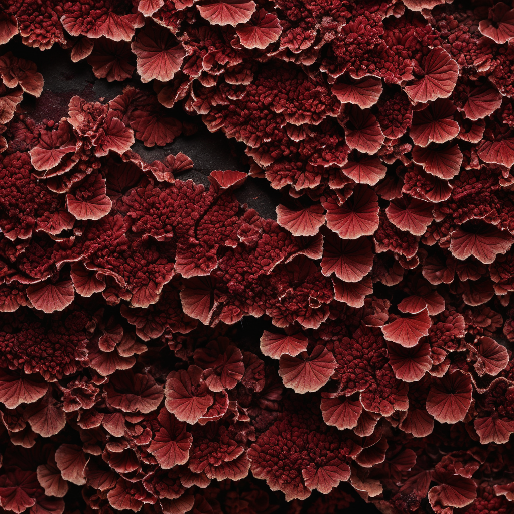
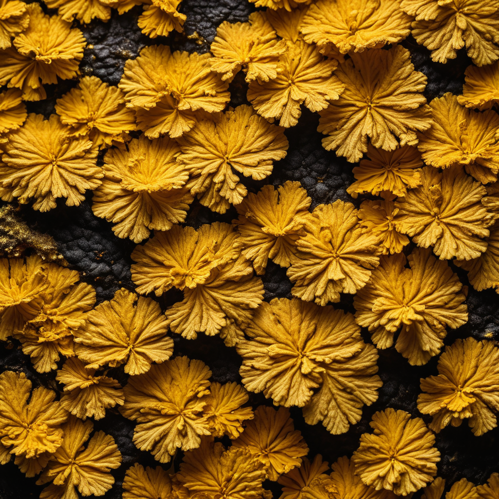
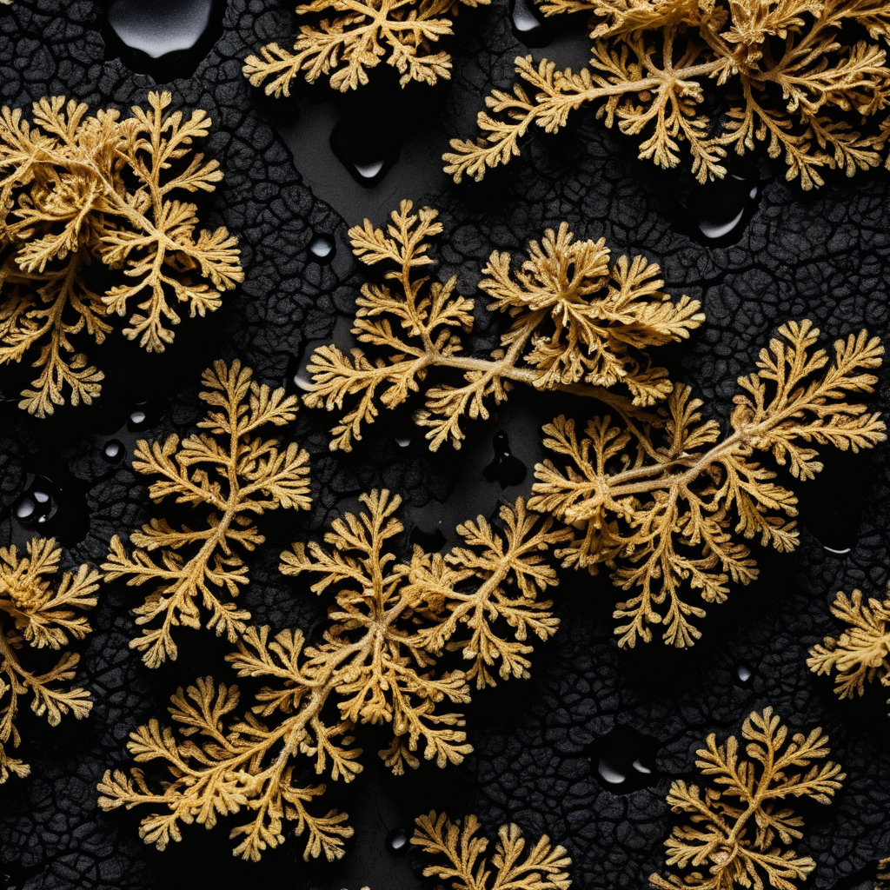
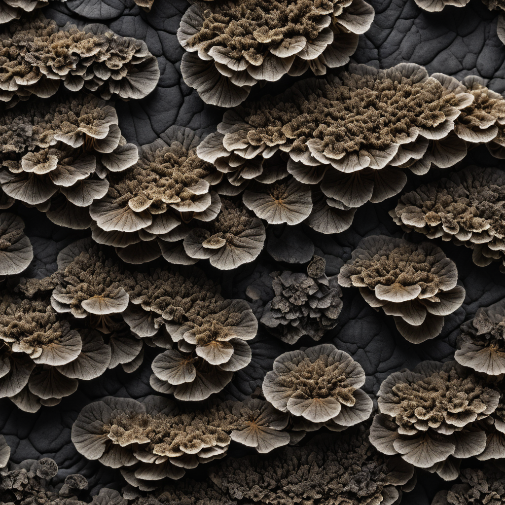

籾殻とカワラタケ菌糸が4週間で建材になる。
あなたの手で型に詰め、育て、壁にする。
使い終わったら土に還す。製造コスト¥500/m²。
建材が「どこでも同じ」になった瞬間、建築は土地を失った。 グラスウールもEPSも、北海道で作っても沖縄で作っても同じ素材だ。
菌糸体パネルは違う。 使う籾殻は隣の田んぼのもの。菌は地域の林から採種できる。 基材の配合が変われば色も質感も変わる——美留和のパネルは美留和にしかない。
建築のゲニウス・ロキ（地霊）を、そのまま壁にする素材。 これが菌糸体パネルを他の建材と根本的に違うものにしている。
菌糸体パネルは、既存の建材と比較して音響・断熱・環境性能で優位。処理を加えることで防水・防火も解決する。
農業廃棄物はほぼ無償。Work Partyの労働は自発的。設備は家庭用オーブン一台。原価から積み上げると答えは出る。
NoMyの研究と国内先行事例から導いた最適解。三田の部屋で再現可能なスケールで設計。
素材の弱点（吸水・燃焼）を処理で補い、建材として完璧な性能を実現する。処理順序が重要。
天然染料・鉱物仕上げ × カワラタケ菌糸体パネル。同じ素材がどう変わるか。







6種の組み合わせをJavaScript Canvasで手続き生成。実際の仕上がりの傾向を事前に確認。
音響・断熱・重量・コスト・環境の5軸で評価。
| 建材 | NRC | λ (W/mK) | 比重 (kg/m³) | 製造CO₂ | 廃棄 | コスト |
|---|---|---|---|---|---|---|
| 菌糸体パネル（本仕様） | 0.85 | 0.05 | 90 | カーボンネガティブ | 堆肥化 | ¥1,500–3,000/m² |
| ロックウール | 0.65–0.80 | 0.04 | 200–300 | 高い | 産廃 | ¥1,000–2,000/m² |
| グラスウール | 0.55–0.75 | 0.04 | 10–30 | 高い | 産廃 | ¥500–1,500/m² |
| EPSフォーム | 0.05–0.15 | 0.04 | 15–30 | 非常に高い | 産廃 | ¥800–1,500/m² |
| コルクボード | 0.50–0.70 | 0.05 | 120–200 | 低い | 自然分解 | ¥3,000–8,000/m² |
| 吸音ウレタン | 0.80–0.95 | 0.03 | 20–40 | 非常に高い | 産廃 | ¥2,000–5,000/m² |
全材料を合わせても初回は1万円以下。2回目以降の資材費は数千円。
三田の実験が美留和の壁になるまでのスケジュール。